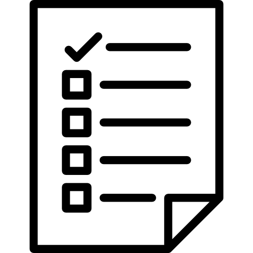

Интерактивные обучающие модули
Программа обучения сварочным работам
Раздел 1
Введение и основы
Раздел 5
Дуговая наплавка и сварка пластин
Раздел 6
Сварка деталей из углеродистой стали
Раздел 8
Полуавтоматическая сварка
Главная
Теория
Практика

Контроль знаний
Компас достижений